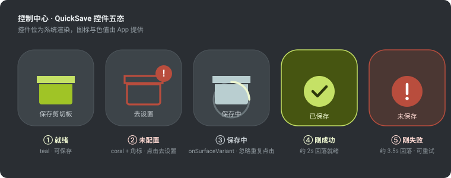
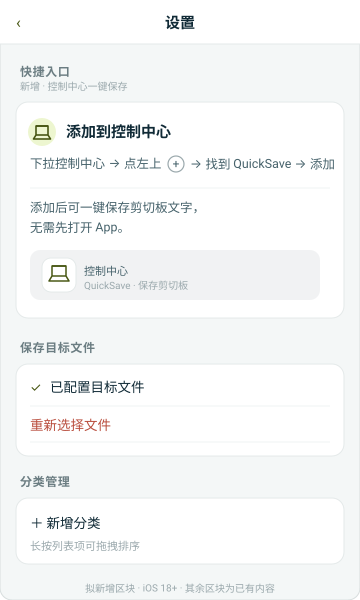
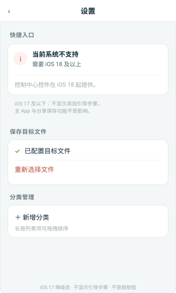
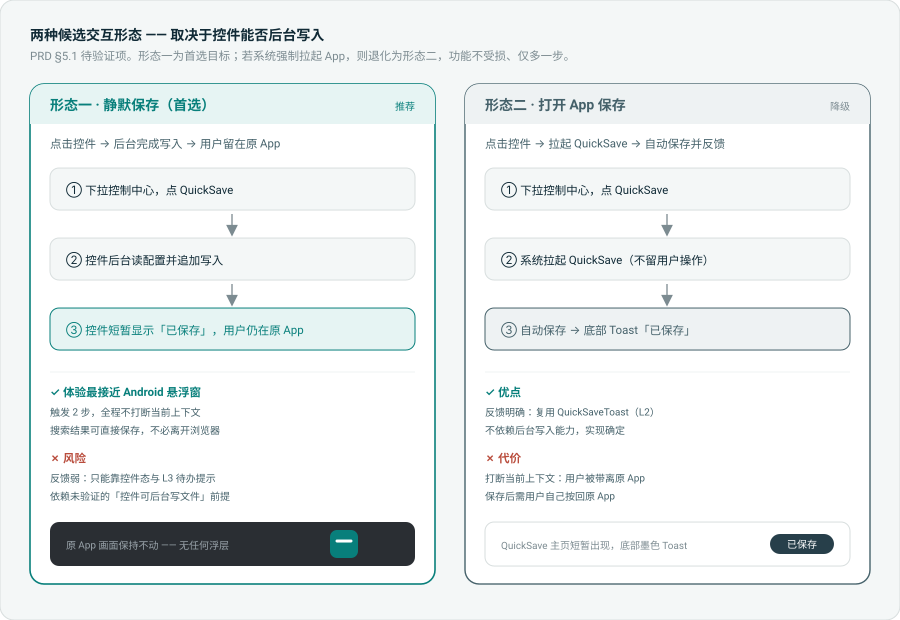
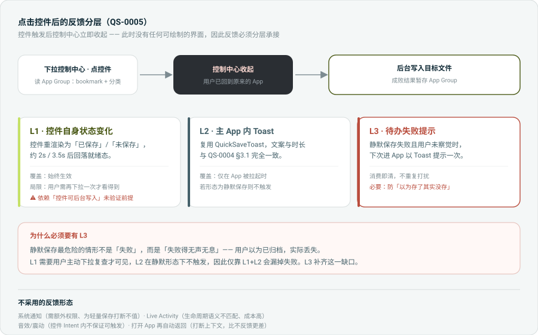

QuickSave QS-0005 — iOS 快捷入口 UI 原型
HIE 设计师输出 · 2026-09-22 · 规划中 v1.7 · 参考 docs/features/QS-0005/ui-ios-quick-entry.md
背景：iOS 第三方 App 没有 Android 悬浮窗那种「任意 App 之上常驻自绘 UI」的公开能力。
本 feature 用控制中心控件（ControlWidget，iOS 18+）作为最接近的合规入口。
⚠ 关键未决项 —— 请重点看这一处：
控件触发后控制中心立即收起，用户已回到原来的 App，此时 App 没有任何可绘制的界面。
因此 Android 那种「浮在原 App 上的 Toast」在控件路径下不存在。
反馈能否做到「静默保存 + 控件态提示」，取决于一个尚未实测的前提：控件 Intent 能否在不打开 App 的情况下完成文件写入。
下面第 ③ 节把两种可能的交互形态都画出来了，请确认是否接受。
① 控制中心控件五态 iOS 18+
控件位由系统渲染，App 只提供图标、色值与标题。控件不支持富 UI —— 无内联输入框、无分类选择器。

就绪 / 未配置 / 保存中 / 刚成功 / 刚失败
「未配置」态用角标而非替换图标，保留 archivebox 的识别连续性
| 状态 | 符号 | 标题 | 颜色 | 点击行为 |
|---|
| 就绪 | archivebox.fill | 保存剪切板 |
teal |
保存当前剪切板文字 |
| 未配置 | archivebox + ! 角标 | 去设置 |
coral |
打开 App 并直达设置页 |
| 保存中 | 过渡态 + 转圈 | 保存中 |
inkSoft |
忽略重复点击（写入串行） |
| 刚成功 | checkmark.circle.fill | 已保存 |
teal |
约 2s 后回落就绪 |
| 刚失败 | exclamationmark.circle.fill | 未保存 |
coral |
约 3.5s 后回落，可重试 |
② 设置页「快捷入口」区块 主 App
用户不会自发发现控制中心可添加控件，因此设置页新增引导区块。两种系统版本各出一图。

① iOS 18+ · 引导图文
iOS 无公开 API 从 App 内跳控制中心，因此按钮降级为静态图文 —— 不做假承诺

② iOS 17 及以下 · 降级说明
仅提示系统要求，不显示引导步骤、不放无效按钮；主 App 功能不受影响
③ 两种候选交互形态 待决策
取决于「控件能否后台写文件」的实测结论。形态一为首选；若系统强制拉起 App，则退化为形态二。

形态一（静默保存，首选） vs 形态二（打开 App 保存，降级）
两种形态的触发步数相同（均为 2 步），差异在于是否打断用户当前上下文
④ 反馈分层 待决策
控件触发后无可绘制界面，反馈必须分层承接。L3 是我主动补的一层，用于防「以为存了其实没存」。

L1 控件态 / L2 App 内 Toast / L3 待办失败提示
L3 为必要项：L1 需主动下拉才可见，L2 在静默形态下不触发，二者都会漏掉失败